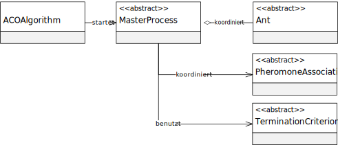
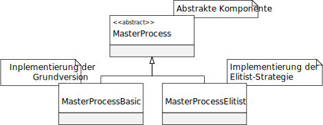

程序包 eu.andredick.aco.masterprocess
package eu.andredick.aco.masterprocess
主程序（ACO元启发式的组成部分）


-
类类说明主流程的抽象组件
主进程负责协调信息素的初始化和蒸发 (参见AbstractPheromoneAssociation)
以及蚂蚁种群 (参见AbstractAnt)来反映ACO元启发式的总体序列.
为此，需在方法AbstractMasterProcess.start()内实现迭代循环,
这取决于抽象终止标准AbstractTerminationCriterion来执行.
主进程在ACOAlgorithm中使用并从那里开始.Masterprozess-Basic - 主进程组件的基本设计
主进程的实现反映了 ACO元启发式 的算法逻辑，
涉及信息素的初始化和蒸发 (参见AbstractPheromoneAssociation)
以及蚂蚁种群 (参见AbstractAnt).
流程:
1 - 信息素的初始化
2 - 构建所有蚂蚁的解
3 - 所有蚂蚁构造解的局部搜索
4 - 信息素的蒸发
5 - 每个 蚂蚁信息素的标记方式
6 - 重置蚂蚁记忆
7 - 如果不满足取消条件，返回 2。主流程基本并行化 - 具有并行执行的主流程组件的基本设计
主流程的实现反映了 ACO 元启发式的上级序列,
通过启动和蒸发信息素 (seeAbstractPheromoneAssociation)
和蚂蚁的数量 (seeAbstractAnt) 协调.
Ablauf:
1 - 信息素的起始
2 - 构建所有蚂蚁的解决方案 - 并行
3 - 对所有蚂蚁的构造解进行局部搜索 - 并行
4 - 信息素的蒸发
5 - 对信息素的标记 alle 蚂蚁
6 - 重置蚂蚁记忆
7 - 返回 2.主流程-精英策略 - 主过程的组件的实现，只允许迭代最佳蚂蚁进行信息素标记。精英主程序 并行 - 规范具有并行执行的主进程的组件，其中只有迭代最佳蚂蚁才能用信息素标记其解决方案.
主流程的实现反映了 ACO 元启发式的上级序列,
通过启动和蒸发信息素 (seeAbstractPheromoneAssociation)
和蚂蚁的数量 (seeAbstractAnt) 协调.
Ablauf:
1 - 信息素的起始
2 - 构建所有蚂蚁的解决方案 - 并行
3 - 对所有蚂蚁的构造解进行局部搜索 - 并行
4 - 信息素的蒸发
5 - 信息素的标记 迭代 蚂蚁
6 - 重置蚂蚁记忆
7 - 返回 2.